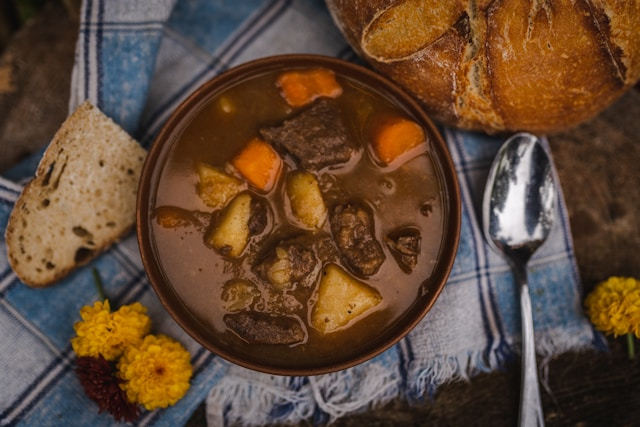

Beef & Beer Stew
Home

Description
A hearty beef stew that will keep you warm during the winter.
Ingredients
- Bacon
- Beef
- Stout Beer
- Beef stock
- Onions
- Carrots
- Salt & pepper
Steps
- Cook the bacon until crispy, then set aside.
- Cut the beef into bite-sized pieces and season with salt and pepper.
- Add the beef to the pan and cook until browned.
- Add the onions and carrots, and cook until softened.
- Pour in the stout beer and beef stock.
- Simmer for 2-3 hours until the beef is tender.